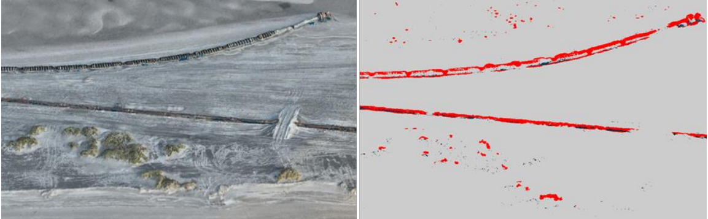

Geospatial Data Scientist
TOMER
PELED
I'm Tomer. A starting geospatial data scientist with an interest in combining remote sensing data and deep learning methods. Educated in geo-information science (BSc & MSc), with hands-on experience as a GIS specialist across internships and full-time work.